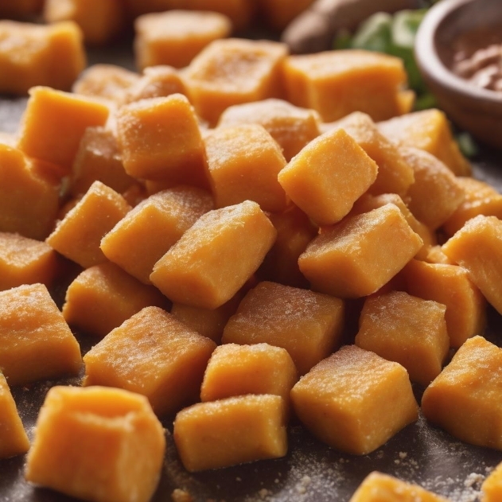

Sweet Potato Gnocchi

↩ Back
Description
Dive into a world of flavor with our Sweet Potato Gnocchi—an exquisite balance of simplicity and taste. Each pillowy morsel encapsulates the wholesome sweetness of mashed sweet potatoes, elevated by the gentle richness of Parmesan. Whether bathed in the timeless richness of brown butter and sage or accompanied by a light tomato sauce, this dish is a celebration of homemade comfort, offering a delightful experience that is both heartwarming and delicious.
Crafted with care, our Sweet Potato Gnocchi brings a touch of culinary finesse to your table. The tender bites, born from a harmonious blend of ingredients, invite you to enjoy the sheer pleasure of homemade goodness. Whether relishing them on your own or sharing with loved ones, this dish encapsulates the joy of simple, homemade indulgence, making every forkful a moment to savor.
Ingredients
- 2 medium-sized sweet potatoes, baked and mashed
- 2 cups all-purpose flour, plus extra for dusting
- 1/2 cup grated Parmesan cheese
- 1 teaspoon salt
- 1/2 teaspoon ground nutmeg
- 1 large egg, beaten
Steps
- Bake Sweet Potatoes: Preheat the oven to 400°F (200°C). Bake the sweet
potatoes until tender. Once cooled, peel and mash them.
- Prepare Dough: In a large mixing bowl, combine the mashed sweet potatoes,
flour, Parmesan cheese, salt, nutmeg, and beaten egg. Mix until a soft dough forms.
- Knead and Shape: Turn the dough out onto a floured surface. Knead it gently,
adding more flour if needed to prevent sticking. Divide the dough into smaller portions and
roll each into a long rope.
- Cut into Gnocchi: Cut the ropes into bite-sized pieces. Optionally, use a fork
to create ridges on the gnocchi.
- Cook Gnocchi: Bring a large pot of salted water to a boil. Drop the gnocchi
into the boiling water and cook until they float to the surface, indicating they are done.
- Optional Sauté: For added flavor, sauté the cooked gnocchi in a pan with
butter or olive oil until they develop a golden crust.
- Serve: Plate the sweet potato gnocchi and serve with your favorite sauce,
such as brown butter and sage or a light tomato sauce. Garnish with additional Parmesan
cheese if desired.